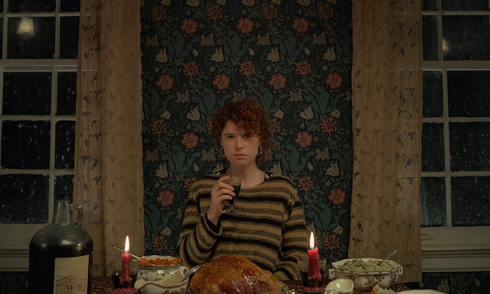
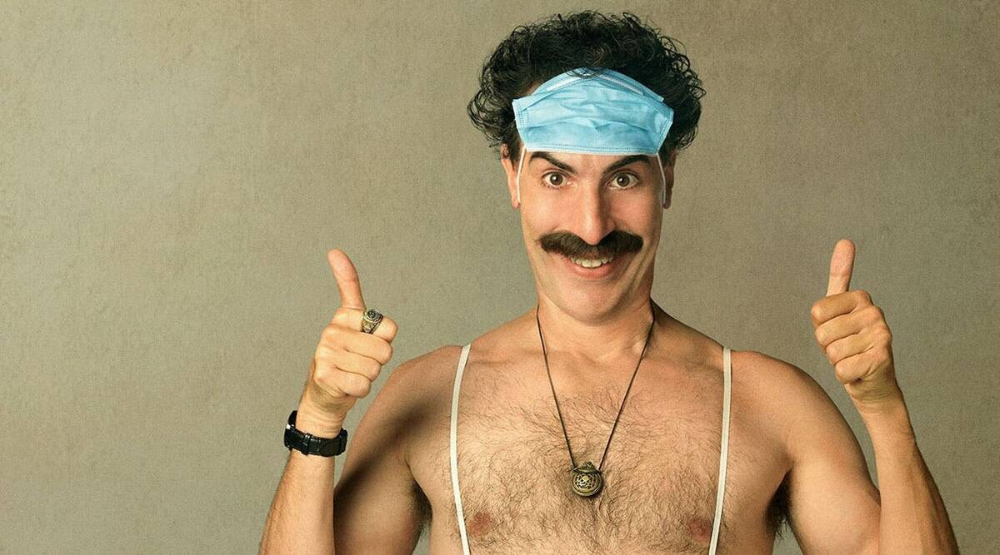

2020 was a difficult and really strange year. Here we are going to remind ourselves that some good things actually happened, at least in the Cinemas!
-Raymond (Charlie Hunnam
An American expat tries to sell off his highly profitable marijuana empire in London, triggering plots, schemes, bribery and blackmail in an attempt to steal his domain out from under him.
-The young woman (Jessie Buckley)
Full of misgivings, a young woman travels with her new boyfriend to his parents' secluded farm. Upon arriving, she comes to question everything she thought she knew about him, and herself.
-Borat (Sasha Baron Cohen)
Follow-up film to the 2006 comedy centering on the real-life adventures of a fictional Kazakh television journalist named Borat.